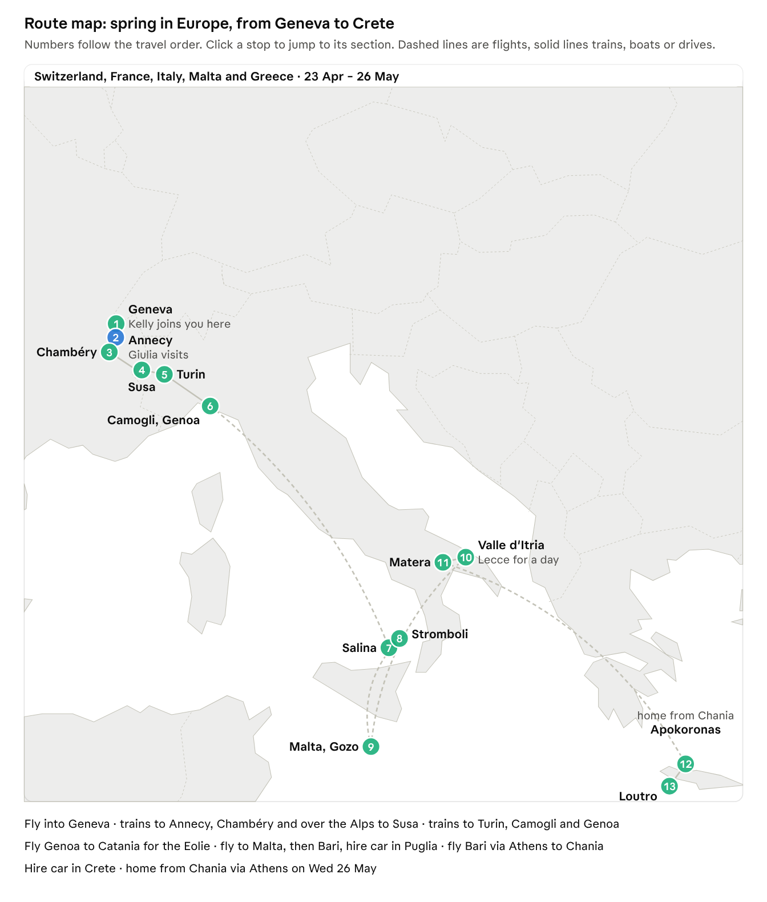

Jump to: Tokyo · Geneva · Annecy, Chambéry and Susa · Turin and Liguria · Eolie · Malta · Puglia · Crete · What to book · To discuss with Kelly
Route map
Spring starts with eight nights in Japan and a night in Geneva, then runs north to south and back: Annecy, Chambéry, Susa, Turin, the Riviera, the Eolie, Malta and Gozo, Puglia and Crete, flying home from Chania. The late-summer trip, Tahoe and the Dolomites, is only if spring goes well.

Timeline
Marco flies out on Tue 13 Apr after work and Kelly flies to Geneva on Thu 22 Apr, meeting him there on Friday; you both fly home from Chania on Wed 26 May, landing Thu 27 May. Marco's leave runs Wed 14 Apr to Thu 27 May, 31 working days, and you're back at work on Fri 28 May.
The plan at a glance
Thirty-one days of leave buy eight nights in Japan and a month in Europe, Wed 14 Apr to Thu 27 May 2027. Nothing is fixed yet, so the dates follow the local calendar: each leg sits between the school holidays, long weekends and festivals that would fill it (see Fixed dates and assumptions). Japan comes first, six nights with Massimo and two on your own, then a night in Geneva, where Kelly joins you. From there the route runs north to south and back: Annecy, Chambéry, Susa, Turin, the Riviera, the Eolie, Malta, Puglia and Crete as a couple, flying home from Chania on Wed 26 May. It's also your first long trip together, so it has time apart built in and flexible bookings for the second half.
Japan, 14 – 22 Apr. Marco flies out on Tue 13 Apr after work and lands on Wednesday; six nights with Massimo, countryside first: Chichibu and the Ikaho onsen midweek, Tokyo at the weekend. Then two nights on your own, to plan.
Geneva, 23 Apr. You fly from Tokyo and Kelly from Sydney on Thu 22 Apr, both landing Friday morning; one night.
Annecy, 24 – 28 Apr. Train from Geneva on Saturday for four nights, from the last weekend of the local school holidays to well before Ascension; Giulia comes down from Paris when it suits her.
Chambéry, 28 – 29 Apr. Train from Annecy on Wednesday, about 50 min; one night.
Susa, 29 – 30 Apr. High-speed train to Oulx on Thursday, then down the valley to Susa; one night in the small Roman town below the Alps.
Turin, Camogli and Genoa, 30 Apr – 4 May. A night in Turin, two in Camogli over the May Day weekend, then a night in Genoa for the flight; gone before Ascension and the fish festival on 8 – 9 May.
Eolie, 4 – 9 May. Fly Genoa to Catania on Tuesday; Salina for three nights, then Stromboli for two.
Malta and Gozo, 9 – 14 May. Fly Catania to Malta on Sunday afternoon; a night in Valletta, then four on Gozo, where the family may have its roots.
Puglia, 14 – 20 May. Fly Malta to Bari on Friday; a masseria in the Valle d'Itria for the weekend, with Lecce as a day out, then Matera.
Crete, 20 – 26 May. Via Athens to Chania; Apokoronas villages, then Loutro on the car-free south coast. Fly home from Chania via Athens on Wed 26 May, landing Thu 27 May.
Giulia can take leave, so her visit to Annecy isn't tied to a holiday weekend; Annecy is about 3h45 from Paris by TGV.
Late-summer trip, 20 Aug – 7 Sep, only if spring goes well
Kelly's house at Lake Tahoe in high summer, then the Dolomites while the huts are open: a shorter second trip of 12 working days, to decide on after the spring trip.
California, 20 – 28 Aug. Kelly's house at Lake Tahoe, then San Francisco.
Dolomites, 29 Aug – 5 Sep. Val di Funes, below the Alpe di Siusi, Val Badia; fly home from Venice on Sun 5 Sep, landing Tue 7 Sep.
Leave: 31 days in spring, plus 12 if the late-summer trip goes ahead
| Trip | Away | Leave dates | Working days of leave | Public holidays inside |
|---|---|---|---|---|
| Spring trip | Tue 13 Apr (night flight) – Thu 27 May | Wed 14 Apr – Thu 27 May | 31, long service | Mon 26 Apr, the extra Anzac Day holiday in NSW, so it costs no leave |
| Late-summer trip, if it goes ahead | Fri 20 Aug (night flight) – Tue 7 Sep | Mon 23 Aug – Tue 7 Sep | 12, long service | None |
| Total | 31, or 43 with late summer |
Balances you gave, with no leave taken: 43.72 days of long service and 13.87 annual by 1 Feb 2027; 46.31 long service and 25.56 annual by 1 Sep 2027. The 31 spring days fit within the February balance. If the late-summer trip goes ahead, its 12 days take the total to 43, still within the long service balance in September. Both trips fly out on an evening after work, so the flight out costs no leave.
Why these places
Every stop is there for one of three reasons: it was on your list, it's in its best season on these dates, or it gives the off-the-beaten-track version of a place instead of the headline one.
| Destination | Where you stay or go | Why these |
|---|---|---|
| Japan | Tokyo | On your original list, added back at your request: six nights for Marco and Massimo. Mid-April is about 12 – 21 °C, after the cherry blossom and well before Golden Week. |
| France | Geneva for a night, Annecy, Chambéry for a night | Annecy on your list: the lake, the old town and the mountains above it, and an easy train for Giulia from Paris. You arrive as the local schools go back and leave before the Ascension long weekend. Geneva is where the flights land; Chambéry, the old Savoy capital, is on the way to Italy. Paris was dropped. The train under the Alps to Italy avoids one-way car-hire fees. |
| Italy: Turin and Liguria | Susa, Turin, Camogli, Portofino, San Fruttuoso, Genoa | Not on your list. Susa, a Roman town in the valley below the Alps, and Turin break the journey from Chambéry to the coast: elegant, quieter than Milan, with the arcades, the cafés and the Egyptian Museum. Then coastal walking at about 18 – 21 °C, before the beach season and before Camogli's fish festival, different from your May 2026 Cinque Terre trip. |
| Italy: Eolie | Salina, Stromboli | On your list. Early May is about 20 – 22 °C and quiet, with a cool sea of about 18 °C; Salina is the quiet green one. The Ascension crowds from France, Germany and Switzerland rarely come this far. |
| Malta and Gozo | A night in Valletta, then Gozo (a farmhouse in Għarb or Xagħra, or Xlendi cove) | Added at your request: possible Bordieri family roots. Mid-May is about 23 – 26 °C with the sea around 19 – 20 °C, before the June festa season and the 7 June national holiday. |
| Italy: Puglia | The Valle d'Itria (Cisternino or Locorotondo), Lecce for a day, Matera | On your list. Mid-May is about 20 – 24 °C, before the heat and the summer crowds; the Pentecost weekend goes to the countryside and Matera comes midweek. |
| Greece: Crete | West Crete and its south coast | Crete on your list. Late May is about 25 – 27 °C with the sea around 21 °C, after Greek Easter and before English half-term; villages and the car-free south coast instead of the resort strip. The Cyclades were dropped. |
| Dolomites (late-summer trip, if it goes ahead) | Val di Funes, Val Gardena hamlets, Alpe di Siusi, Val Badia | On your list, but closed for walking from February to May. Late August and early September have the huts open and settled weather, as the August crowds thin. Lago di Braies and Seceda skipped. |
| USA (late-summer trip, if it goes ahead) | Lake Tahoe (Kelly's house), San Francisco | Kelly's house is at Tahoe. Late August is high summer at the lake, warm enough to swim, after California's schools have gone back and before Labor Day; San Francisco is the jump-off for Europe. Wildfire smoke is the risk at this time of year. |
Fixed dates and assumptions
Nothing is fixed yet, so the dates follow the local calendar: each leg sits between the school holidays, long weekends and festivals that would fill it. These are the ones the plan steers round.
| Dates (2027) | What | How the plan avoids it |
|---|---|---|
| 10 – 26 Apr | French school holidays in Annecy's zone | You arrive in Annecy on Sat 24 Apr, the last weekend, after a night in Geneva |
| 13 – 18 Apr | Milan Design Week | Milan isn't in the plan |
| 27 Apr – 16 May | Rome tennis Open | Rome isn't in the plan for now |
| 29 Apr – 5 May | Golden Week in Japan | Marco leaves Japan on Thu 22 Apr |
| 30 Apr – 3 May | Greek Orthodox Easter (Sun 2 May) | Crete comes from 20 May |
| Sat 1 – Sun 2 May | May Day weekend in Italy | Camogli over the weekend: busy by day, quiet in the evening; book early |
| 6 – 9 May | Ascension long weekend in France, Germany, Switzerland and Austria | You're in the Eolie, which these visitors rarely reach |
| 8 – 9 May | Camogli fish festival; Venice Architecture Biennale opens; the Giro starts | You leave Camogli on 3 May |
| 13 – 17 May | Turin Book Fair | Turin is on 30 Apr |
| 15 – 29 May | Pentecost, then Bavarian and Baden-Württemberg school holidays | Puglia and Crete, where they matter least; Liguria and the lakes are avoided then |
| Sat 29 May – Wed 2 Jun | Republic Day bridge; Giro finale in Rome on Sun 30 May (2027 route published 3 Nov 2026: Trieste 8 May to Rome 30 May, no stages in Liguria, Sicily or Puglia; Monza – Milan time trial on 23 May, before you get there) | You fly home from Crete on Wed 26 May, three days before |
| 31 May – 4 Jun | English school half-term | You're home by then |
| Mon 7 Jun | Malta's national holiday, then the festa season | You leave Malta on 14 May |
| about 8 – 10 Jun | Italian schools finish and the beach season starts | You fly home on 26 May |
| 13 – 19 Jun | Annecy animation festival | Long gone |
| Mid-Sep | Most Dolomites huts close around 20 Sep | Late-summer trip, if it goes ahead |
Assumptions, flag any that are wrong:
Leave counts in working days. Marco flies out on Tue 13 Apr after work; Wed 14 Apr to Thu 27 May is 31 working days, with Mon 26 Apr a NSW public holiday (the extra Anzac Day holiday). Fly home from Chania on Wed 26 May, land in Sydney Thu 27 May, back at work Fri 28 May.
Kelly joins you in Geneva on Fri 23 Apr and stays to the end, flying home with you from Chania; the second half is booked on refundable or changeable terms so it can shrink or stretch.
Kelly would rather avoid long taxi runs; driving yourselves in a hire car is fine. Trains, hydrofoils or flights cover the long hops.
Passports: Marco Italian and Australian, Kelly Australian and US. Marco travels in Europe on his Italian passport, so the EU's coming ETIAS authorisation doesn't apply to him; Kelly will need it on either of her passports once it starts, and there's no start date yet, with reporting pointing to sometime in 2027.
Comfortable, characterful mid-range places to stay: guesthouses, agriturismi, masserie. No chains or resorts.
Spring: Japan, Geneva, Annecy, Chambéry, Susa, Turin and Liguria, the Eolie, Malta, Puglia and Crete (14 Apr – 26 May)
Marco flies to Tokyo on Tue 13 Apr for six nights with Massimo and two more on his own. On Thu 22 Apr you fly to Geneva and Kelly flies there from Sydney; a night there, then by train to Annecy on Sat 24 Apr. Four nights in Annecy, where Giulia can come down from Paris, a night in Chambéry and one in Susa, then Marco and Kelly have Turin, the Riviera, the Eolie, Malta and Gozo, Puglia and Crete. On Wed 26 May, the day after your birthday dinner in Chania, you fly home via Athens, landing in Sydney on Thu 27 May.
Transfers at a glance
Every move between places, in order. Flight and boat times with a clock time come from a timetable; the rest are estimates of the journey itself, to recheck once the 2027 timetables are out.
| Date | From → to | How | Time |
|---|---|---|---|
| Tue 13 Apr | Sydney → Tokyo (Marco) | ANA nonstop, 20:55 → 05:45 Wed | about 9h40 |
| Thu 22 Apr | Sydney → Geneva (Kelly) | Etihad via Abu Dhabi, 15:40 → 07:10 Fri | about 23h30 |
| Thu 22 Apr | Shinjuku → airport (Marco) | Train | about 1 h |
| Thu 22 Apr | Tokyo → Geneva (Marco) | Etihad via Abu Dhabi, Narita 18:00 → 07:10 Fri | about 20h10 |
| Sat 24 Apr | Geneva → Annecy | Léman Express, direct | about 1h20 |
| Wed 28 Apr | Annecy → Chambéry | Regional train | about 50 min |
| Thu 29 Apr | Chambéry → Susa | High-speed train to Oulx, then bus or local train down to Susa | about 2h30 |
| Fri 30 Apr | Susa → Turin | Regional train, change at Bussoleno | about 1h10 |
| Sat 1 May | Turin → Camogli | Train to Genoa (about 2 h), then local train (about 30 min); May Day timetable | about 2h30 |
| Mon 3 May | Camogli → Genoa | Local train | about 40 min |
| Tue 4 May | Genoa → Genoa airport | Volabus from the city centre | about 25 min |
| Tue 4 May | Genoa → Catania | Ryanair FR5027, 10:15 → 12:00 | 1h45 |
| Tue 4 May | Catania airport → Milazzo | Giuntabus coach, 13:45 | about 2 h |
| Tue 4 May | Milazzo → Salina | Hydrofoil | about 1h35 |
| Fri 7 May | Salina → Stromboli | Hydrofoil | about 1 h – 1h15 |
| Sun 9 May | Stromboli → Milazzo | Hydrofoil with stops | about 2h30 – 3 h |
| Sun 9 May | Milazzo → Catania airport | Giuntabus coach | about 2 h |
| Sun 9 May | Catania → Malta | Ryanair FR368, 17:20 → 18:10 | 50 min |
| Sun 9 May | Malta airport → Valletta | Taxi | about 20 min |
| Mon 10 May | Valletta → Gozo | Taxi to Ċirkewwa (about 45 min), ferry (25 min), short drive on Gozo | about 1h30 |
| Fri 14 May | Gozo → Malta airport | Ferry (25 min), then taxi (about 40 min): the evening before for the 06:10, or in the afternoon for the 21:30 | about 1h30 |
| Fri 14 May | Malta → Bari | Ryanair, 06:10 → 07:30 or 21:30 → 22:50 (the 10:35 is gone; to decide) | 1h20 |
| Fri 14 May | Bari airport → Valle d'Itria | Hire car | about 1 h |
| 15 – 17 May | Day trips from the Valle d'Itria | Hire car | Lecce about 1 h, Trani about 1h20, Polignano about 35 min, each way |
| Tue 18 May | Valle d'Itria → Matera | Hire car | about 1h15 |
| Thu 20 May | Matera → Bari airport | Hire car | about 1 h |
| Thu 20 May | Bari → Athens | Ryanair, 05:50 → 08:20 (was 10:10; Athens is an hour ahead) | 1h30 |
| Thu 20 May | Athens → Chania | Aegean, 11:25 → 12:15 | about 50 min |
| Thu 20 May | Chania airport → Apokoronas | Hire car | about 30 min |
| Sun 23 May | Apokoronas → Loutro | Drive to Chora Sfakion (about 1 h), then boat (20 min) | about 1h30 |
| Mon 24 May | Loutro → Chora Sfakion | Coast path on foot, back to the car, then drive to Chania | about 2 h |
| Wed 26 May | Chania → Chania airport | Hire car | about 25 min |
| Wed 26 May | Chania → Sydney | SKY express to Athens, then Etihad via Abu Dhabi, 08:20 → 16:50 Thu | about 25h30, landing Thu 27 May |
The drive from Chora Sfakion to Chania on Mon 24 May is an estimate, about 1h30 on the mountain road.
Japan: Chichibu, Ikaho and Tokyo, 14 – 22 Apr (8 nights)
Marco flies Sydney to Tokyo on the night flight on Tue 13 Apr, after work, and lands on Wed 14 Apr. Six nights with Massimo, on the dates that suit him; on Tue 20 Apr Massimo flies home, and Marco has two more nights, to plan, before flying to Geneva on Thu 22 Apr. Mid-April in Tokyo is about 12 – 21 °C, after the cherry blossom, and Golden Week doesn't start until Thu 29 Apr.
The Massimo days follow Massimo's countryside-first plan: Chichibu on a weekday, when the Hitsujiyama shibazakura crowds are lighter, then two onsen nights in Ikaho, back in Tokyo for the weekend. Big bags stay at the Shinjuku hotel; the countryside is done with a small overnight bag. Massimo flies home from Narita on Tue 20 Apr. The lighter alternative in his plan drops Ikaho for two nights in Chichibu, back in Tokyo on Sat 17 Apr; not yet chosen.
| Dates | Who | Base | Nights | What to do |
|---|---|---|---|---|
| Wed 14 Apr | Marco and Massimo | Shinjuku | 1 | Arrive; Massimo lands at Narita around 16:10 from Busan |
| Thu 15 Apr | Marco and Massimo | Chichibu | 1 | Red Arrow from Ikebukuro, about 80 min; Chichibu Shrine, Buko Shuzo sake brewery next door, Hitsujiyama if blooming |
| Fri 16 – Sun 18 Apr | Marco and Massimo | Ikaho onsen, Gunma | 2 | About 3 h by train and bus; ryokan with kaiseki, the 365 stone steps to Ikaho Shrine, Mizusawa udon, Lake Haruna. Saturday is the busiest ryokan night: book early |
| Sun 18 Apr | Marco and Massimo | Shinjuku | 1 | Back via the Takasaki shinkansen, about 2h30; Koenji izakaya with a local friend |
| Mon 19 Apr | Marco and Massimo | Shinjuku | 1 | Last night together. Tue 20 Apr: Massimo flies home |
| Tue 20 – Thu 22 Apr | Marco | To plan | 2 | Two nights on your own, to plan. Thu 22 Apr: fly to Geneva via Abu Dhabi |
Geneva, Marco and Kelly, 23 – 24 Apr (1 night)
Thu 22 Apr: Marco flies Tokyo to Geneva and Kelly flies Sydney to Geneva, both on Etihad via Abu Dhabi, both landing at 07:10 on Friday: Marco from Narita 18:00 (20h10, A$1,347 one-way on 15 Nov), Kelly from Sydney 15:40 (23h30, A$1,175), so you meet in Abu Dhabi and take the last flight together. Cheaper or Gulf-free alternatives are in the flight sheet: Air China via Beijing for Marco (A$930), Qatar via Doha for Kelly (A$1,157). Sat 24 Apr: the Léman Express to Annecy, direct, about 1h20. It's the last weekend of the French school holidays, so expect families heading home; from Monday it's quiet.
Annecy, with Giulia, 24 – 28 Apr (4 nights), then Chambéry and Susa (1 night each)
| Day | Where | What |
|---|---|---|
| Sat 24 | Annecy | Léman Express from Geneva, direct, about 1h20; the old town's canals in the evening |
| Sun 25 | Annecy | The lake path by bike to Talloires |
| Mon 26 | Annecy | The walk up Mont Veyrier above the lake (2 – 3 h); the Semnoz may still have snow near the top |
| Tue 27 | Annecy | A boat across the lake and lunch in a lakeside village |
| Wed 28 | Chambéry | Regional train from Annecy, about 50 min; the old town, the château of the Dukes of Savoy and the Fontaine des Éléphants |
| Thu 29 | Susa | High-speed train from Chambéry to Oulx, then bus or local train down the valley, about 2h30 in all; the Roman arch and the old town |
| Fri 30 | Turin | Regional train from Susa, change at Bussoleno, about 1h10 |
Giulia can take leave, so she can come down from Paris by TGV (about 3h45) on whichever days suit her. Late April in Annecy is about 14 – 18 °C with showers likely, and the lake is too cold to swim. You arrive on Sat 24 Apr, the last weekend of the local school holidays, so the first two days are busier, and leave well before the Ascension long weekend (6 – 9 May), when the town fills.
Direct high-speed trains from Chambéry through Turin to Milan resumed in April 2025, after a 2023 landslide closed the line; Trenitalia runs four a day (Railin). Going by train avoids the large fee for dropping a French hire car in Italy.
Turin, Camogli and Genoa, Marco and Kelly, 30 Apr – 4 May (4 nights)
Fri 30 Apr: the regional train from Susa to Turin, and a night there to split the journey. Sat 1 May, May Day: Turin to Genoa (about 2 h, holiday timetable) and on to Camogli (about 30 min). It's the long weekend, so the days are busy with day-trippers from Milan and Turin and the evenings quiet; book Camogli early. Mon 3 May: a night in Genoa, for the morning flight. Early May on the Riviera is about 18 – 21 °C, green and in flower, well before the beach season. This stretch of coast is different from the Cinque Terre you saw in May 2026.
| Dates | Base | Nights | What to do |
|---|---|---|---|
| 30 Apr – 1 May | Turin | 1 | The arcades of Via Po and Piazza San Carlo, a bicerin at Caffè Al Bicerin, the Egyptian Museum, and the lift up the Mole Antonelliana for the Alps at sunset. Sat 1 May: train to Genoa and Camogli, about 2½ h |
| 1 – 3 May | Camogli | 2 | The harbour and the focaccia di Recco on arrival. Sunday: the promontory path to San Fruttuoso abbey (2 – 3 h), early, before the day-trippers, and the boat on to Portofino, then back by boat or bus for sunset on the waterfront. Mon 3 May: train to Genoa, about 40 min |
| 3 – 4 May | Genoa | 1 | The old town's alleys, the port and the Spianata Castelletto lookout; the Via Garibaldi palace museums are closed on Mondays. Tue 4 May: the Volabus to the airport, about 25 min, for the 10:15 flight |
Eolie, Marco and Kelly, 4 – 9 May (5 nights)
Tue 4 May: fly Genoa to Catania (Ryanair FR5027, 10:15 → 12:00, €55 on 1 Nov). Then the 13:45 Giuntabus coach from the airport to Milazzo port (€13 each, luggage included, about 2 h; the 12:30 if you're out of the airport quickly), arriving about 15:45, and an afternoon hydrofoil to Salina (about 1h35). Giuntabus confirmed by email on 4 Nov that from April to May 2027 there are eight coaches a day each way: from the airport at 10:00, 11:00, 12:30, 13:45, 15:30, 16:30, 17:30 and 19:00 (the last), and from Milazzo at 07:00, 08:30, 09:50, 11:00, 12:40, 13:45, 14:30 and 15:45 (the last). They say the summer times can still change, so check giuntabus.com closer to the date. the 2027 hydrofoil timetable is published at the end of 2026, per Liberty Lines. Early May is about 20 – 22 °C with the sea around 18 °C, cool for swimming, and the islands are quiet before the June season.
| Dates | Base | Nights | What to do |
|---|---|---|---|
| 4 – 7 May | Salina | 3 | Monte Fossa delle Felci (962 m, about 3 h up), Pollara, capers and Malvasia, granita and pane cunzato in Lingua |
| 7 – 9 May | Stromboli | 2 | Sunset walk to the 400 m viewpoint with an authorised guide (about 5 h); the summit is closed to visitors. Boat to Ginostra. Sun 9 May: early hydrofoil to Milazzo (about 2½ – 3 h with stops), the 11:00 or 12:40 coach to Catania airport, and the 17:20 flight to Malta |
Malta and Gozo, Marco and Kelly, 9 – 14 May (5 nights)
Sun 9 May: fly Catania to Malta (Ryanair FR368, 17:20 → 18:10, A$31 each on 13 Nov; also 07:20 and 14:55). Mid-May is about 23 – 26 °C with the sea around 19 – 20 °C, before the June festa season and the 7 June national holiday. English is spoken everywhere.
| Dates | Base | Nights | What to do |
|---|---|---|---|
| 9 – 10 May | Valletta | 1 | Land in the evening; Valletta's walled baroque streets at night |
| 10 – 14 May | Gozo (a farmhouse in Għarb or Xagħra, or Xlendi cove) | 4 | Bus or taxi to Ċirkewwa and the 25-minute ferry to Mgħarr. The Citadel in Victoria, Ramla Bay's red sand, the cliff walks; the coast path from Marsalforn past the Xwejni salt pans, hand-worked by the same families for generations (buy salt from them; the harvest starts around May), then a swim in Marsalforn bay; a look for Bordieri family traces. Fri 14 May: Malta to Bari is now 06:10 or 21:30 (the 10:35 is gone). To decide: the 06:10 with the last night near Malta airport, or the 21:30 with a last full day on Gozo |
Puglia, Marco and Kelly, 14 – 20 May (6 nights, hire car)
Fri 14 May: fly Malta to Bari (Ryanair, 06:10 → 07:30 or 21:30 → 22:50; the 10:35 is gone, and with the late one the first night is near Bari airport), pick up the car and drive about an hour to the masseria. Mid-May in Puglia is about 20 – 24 °C, before the heat and the summer crowds. The Pentecost weekend (Sun 16 May brings a few German and Austrian visitors) goes to the countryside, and Matera comes midweek.
| Dates | Base | Nights | What to do |
|---|---|---|---|
| 14 – 18 May | Valle d'Itria (Cisternino or Locorotondo) | 4 | About 1 h from Bari. A masseria stay, with one full day for the white towns, the dry-stone countryside by bike and Cisternino's butcher-grills. A day in Lecce (about 1 h) for the baroque old town and pasticciotto. A coast day: Trani (about 1h20) and its cathedral on the water in the morning, then Polignano on the way back for the evening |
| 18 – 20 May | Matera (Basilicata) | 2 | About 1h15 by car. A cave room in the Sassi, the walk across the ravine in the Murgia park (2 – 3 h), the Sassi lit up at dusk. Thu 20 May: Ryanair now leaves Bari at 05:50, landing in Athens at 08:20 (the 10:10 is gone), then Aegean 11:25 → 12:15 to Chania on a separate ticket. To decide: the second Matera night near Bari airport instead, or a 3:30 start from Matera. ITA via Rome (06:30 → 12:30) is no later. Two ways to take the risk out: leave Matera on the 19th and sleep a night in Athens, or ticket Bari → Chania through on Aegean or Sky Express if they sell the Bari leg, which protects the connection. Ryanair's own Bari – Chania and Malta – Chania flights only run from June, or one day a week in May |
Drive-and-wander extras: Cisternino's butcher-grills (pick your meat, they cook it); Locorotondo and Ceglie Messapica for quiet white towns and food; Gravina in Puglia's gorge and Altamura's bread on the Matera day.
Massimo's tips, as a local: he backs the masserie in the Valle d'Itria, and around Bari he suggests Trani, Bari itself and Polignano. Bari's old town fits the arrival day, Fri 14 May, for lunch before the drive to the masseria. Trani and Polignano share one coast day: Trani, with its cathedral on the water, in the morning (about 1h20 from the Valle d'Itria), and Polignano on the way back.
Crete, Marco and Kelly, 20 – 26 May (6 nights, hire car)
Late May in western Crete is about 25 – 27 °C with the sea around 21 °C, after Greek Easter and before English half-term. The Samaria Gorge normally opens in May. You both fly home from here: Chania → Athens connects to most long-haul flights.
| Dates | Base | Nights | What to do |
|---|---|---|---|
| 20 – 23 May | Apokoronas village (Vamos or Gavalochori) | 3 | Land in Chania late afternoon and drive about 30 min. Chania's old harbour, White Mountain foothill villages. Drive-and-wander ideas: Argyroupoli (springs, Venetian ruins), Polyrrinia hilltop village, Falassarna beach at sunset; Balos and Elafonisi are beautiful but crowded. Naturist-friendly: Kedrodasos (a short walk from Elafonisi, quieter), the far north end of Falassarna |
| 23 – 24 May | Loutro, south coast | 1 | Car-free village reached by boat; quiet once the day-trip ferries leave. Arrive in the afternoon, the evening there; next morning the coast path to Chora Sfakion (about 2 h) via Sweetwater Beach (naturist-friendly), back to the car, then drive to Chania (about 1h30) |
| 24 – 26 May | Chania | 2 | Two nights back near the airport, with your birthday dinner by the old harbour on Tue 25 May. Wed 26 May: fly home, Chania to Athens in the morning, then Etihad via Abu Dhabi |
The Rome notes are kept in their own doc for whenever they're wanted; the earlier Milan, Modena, Slovenia and Venice days are in this doc's history.
What to book in advance, and when
Everything with a timed slot, a quota or a sale window, flights and beds aside. In order of booking date, each the latest sensible moment worked back from the itinerary. Most of the rest of the trip is turn-up-and-go: regional trains, the Gozo ferry, the Loutro boats, the San Fruttuoso boat.
Spring
| When | What | How |
|---|---|---|
| Early Jan 2027, when sales open (about 4 months out) | Chambéry → Oulx high-speed train, Thu 29 Apr | Trenitalia or SNCF; the regional trains (Annecy → Chambéry, Oulx → Susa, Susa → Turin) need no booking |
| Jan – Mar | Hire cars: Puglia (Bari, 14 – 20 May) , Crete (Chania, 20 – 26 May), free cancellation | Any broker; full-size boot for two bags |
| Jan – Mar | Geneva, one night, Fri 23 Apr, free cancellation | Near Cornavin station, for the train to Annecy |
| Jan – Mar | Chambéry, Wed 28 Apr, and Susa, Thu 29 Apr, one night each, free cancellation | Both in the old town, near the station |
| Early Jan 2027, once the timetable is published (Liberty Lines: end of 2026) | Liberty Lines hydrofoils, 4, 7 and 9 May: check the afternoon run to Salina on the 4th and the first boat out on the 9th, then decide the island order | libertylines.it; the Giuntabus coach is bought on the day or online |
| April | Kelly: ETIAS if it has started by then | europa.eu/etias |
| Mid-April, 2 – 3 weeks before | Stromboli sunset walk to the 400 m viewpoint, Fri 7 or Sat 8 May; May is quiet | An authorised guide (Magmatrek or similar); the summit stays closed |
| Last week of April | Turin, Fri 30 Apr: Egyptian Museum and the Mole lift, timed entry | Museum and Mole websites |
Late-summer trip, 20 Aug – 7 Sep 2027
Tahoe, San Francisco and the Dolomites, only if spring goes well; the day-by-day, its flights and its bookings are on their own tab: Late summer
Flights
Priced on Google Flights on 13 Nov 2026: A$ per person including taxes, for the cheapest fare on the flight that fits the plan. Ryanair, Wizz and Scoot fares don't include bags. A dash means economy on a short hop. Most spring legs are still to price on the new dates.
Spring trip
| Leg | Best fit | Times | Economy | Business |
|---|---|---|---|---|
| Sydney → Tokyo, Marco, Tue 13 Apr | ANA nonstop, 20:55 → 05:45 Wed (A$1,529) | — | not yet priced | not yet priced |
| Sydney → Geneva, Kelly, Thu 22 Apr | Etihad via Abu Dhabi, 15:40 → 07:10 Fri, 23h30 (A$1,175, 15 Nov) | — | not yet priced | not yet priced |
| Tokyo → Geneva, Marco, Thu 22 Apr | Etihad via Abu Dhabi, Narita 18:00 → 07:10 Fri, 20h10 (A$1,347, 15 Nov) | — | not yet priced | not yet priced |
| Genoa → Catania, Tue 4 May | Ryanair nonstop | FR5027, 10:15 → 12:00 | about 100 + bag (€55, Ryanair, 1 Nov) | — |
| Catania → Malta, Sun 9 May | Ryanair nonstop | FR368, 17:20 → 18:10 | A$31 each on 13 Nov | — |
| Malta → Bari, Fri 14 May | Ryanair nonstop | 06:10 → 07:30 or 21:30 → 22:50 (the 10:35 is gone) | A$91 (06:10) or A$35 (21:30), 13 Nov | — |
| Bari → Athens → Chania, Thu 20 May | Ryanair to Athens, then Aegean or Sky Express on separate tickets; or one through ticket if Aegean or Sky Express sell the Bari leg, or a night in Athens | 05:50 → 08:20 (was 10:10), then Aegean 11:25 → 12:15 | A$104 + bag to Athens, A$138 on to Chania (13 Nov) | — |
| Chania → Athens → Sydney, both, Wed 26 May | SKY express to Athens, then Etihad via Abu Dhabi (Aegean + Qatar via Doha is A$1,648, 24h40) | 08:20 → 16:50 Thu, 25h30 | A$1,685 (15 Nov) | not yet priced |
Priced so far, per person: about 2,100 in economy and 12,200 in business for Sydney → San Francisco → Venice, plus about 100 for the Genoa → Catania hop. Everything else is still to price.
Where the hidden savings are
Skip Reno. Pick up a car at San Francisco airport, drive to Tahoe and back (about 3.5 h each way) and return it there before the flight to Venice: no extra flight and no one-way fee.
Turkish Airlines' round-the-world fare for the late-summer trip. It goes from Australia via North America and Istanbul to Europe, and back via Istanbul and Asia, with free stopovers: the late-summer shape (Sydney → San Francisco, stop, → Istanbul → Venice; Venice → Istanbul → Singapore → Sydney). Australian Frequent Flyer's sample of that shape cost 2,105 in economy and 7,862 in business in 2024. It's sold through agents only and prices may have moved, so get a quote before buying the late-summer legs.
Mix airlines in business: TAP via Lisbon, San Francisco → Venice, is 3,606 against 5,306 on United.
Book the bag with the low-cost hops (Ryanair Genoa → Catania, Catania → Malta, Malta → Bari, Bari → Athens); it costs more at the airport.
Leave buffers on separate tickets. Bags don't transfer between them, so allow at least three hours, or a night, on self-made connections.
Checked and not worth it
A return starting in Italy to cover both the June flight home and the flight back out: about 3,000, more than two one-ways.
One round-the-world ticket for both trips: they now run in opposite directions.
Hidden-city tricks: they put the later legs and checked bags at risk.
When to book
Now: the spring long-haul as one multi-city ticket each (Sydney → Tokyo, Tokyo → Geneva, Chania → Sydney), which usually prices well below separate one-ways; changeable fares suit a first long trip together. Hold the late-summer flights until after spring.
Two to four months out: Ryanair, Aegean, the Liberty Lines hydrofoils once the spring timetable is out around February, and the Puglia and Crete hire cars.
Also early: Annecy, Turin, Camogli, Genoa, Salina, Stromboli, Valletta, Gozo, the Puglia masseria, Matera and Loutro. Book the second half, from Crete on, with free cancellation.
To discuss with Kelly
The three days where the connections are tight, each with the way to loosen it. Everything else in the itinerary has slack built in.
Tue 4 May, Genoa → Catania → Milazzo → Salina. Three connections in one day. With the night in Genoa the morning is easy: the Volabus from the city centre, about 25 min, for the 10:15 (bag drop closes at 9:35). The afternoon is the unknown: the coach reaches Milazzo at 15:45, and whether a hydrofoil still leaves for Salina after that is the question for the 2027 timetable, due from Liberty Lines at the end of 2026. If none does, the fix is a night in Milazzo or Lipari, not a later flight.
Sun 9 May, Stromboli → Milazzo → Catania → Malta. One hydrofoil, one coach, one flight, nothing behind them. The 07:15 boat gives four hours of slack; if the wind cancels it, the 11:50 only works with a taxi from Milazzo (about 1h45) instead of the coach, and bag drop for the 17:20 is close. This day decides whether Salina should come last instead of Stromboli.
Fri 14 May, Gozo → Malta airport → Bari. The 10:35 flight is gone. The 06:10 needs the last night near Malta airport; the 21:30 keeps a last full day on Gozo but lands in Bari at 22:50. To decide. Thu 20 May has the same problem: Bari → Athens moved to 05:50.
Open questions
Silvia and Vittoria: the trip no longer passes through Lombardy.
Giulia: which days in Annecy (24 – 28 Apr); and would she join the Dolomites in September?
Japan: Ikaho for two nights, or two nights in Chichibu and back to Tokyo on Saturday?
Economy or business on the long legs? Any Qantas, Velocity or Amex points between you, since business on points could beat everything in Flights?
Eolie, once the 2027 hydrofoil timetable is out (Liberty Lines say end of 2026: check libertylines.it in the first week of January): would Stromboli first and Salina last work? Leaving from Salina on Sun 9 May gives a second boat to Milazzo if the 07:15 is cancelled by wind; it only works if the 13:45 coach on Tue 4 May meets an afternoon hydrofoil that still calls at Stromboli. Asked Liberty Lines by email on 8 Nov 2026 (afternoon run on 4 May, Salina – Stromboli on 7 May, first boat to Milazzo on 9 May); they replied the same day that the 2027 timetables will be published at the end of 2026.